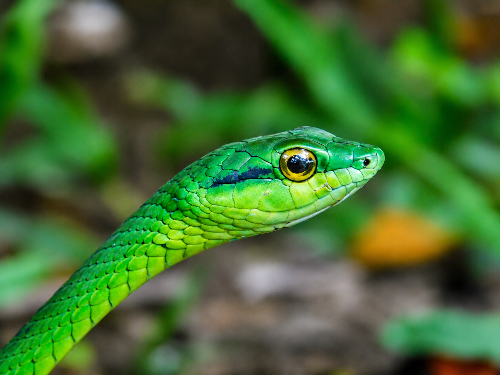
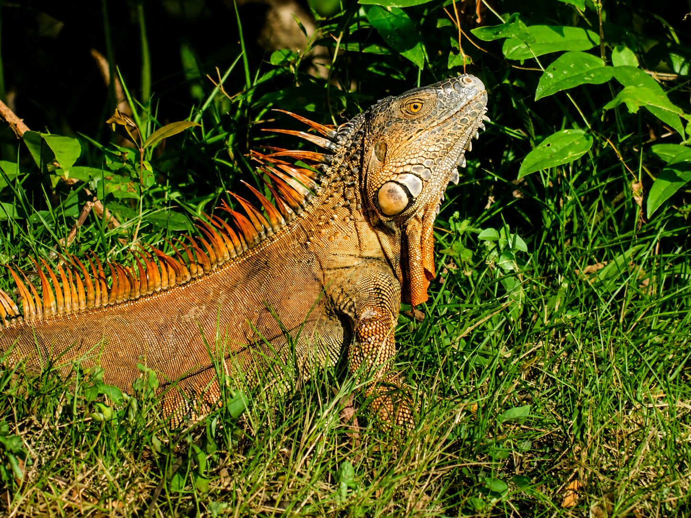
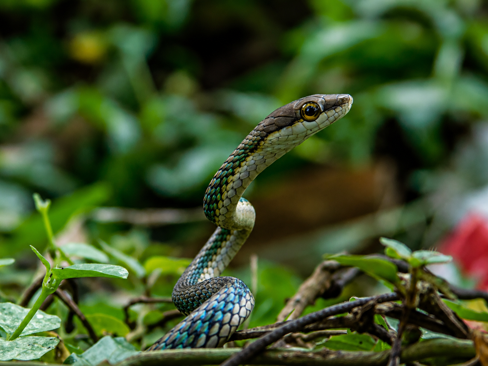
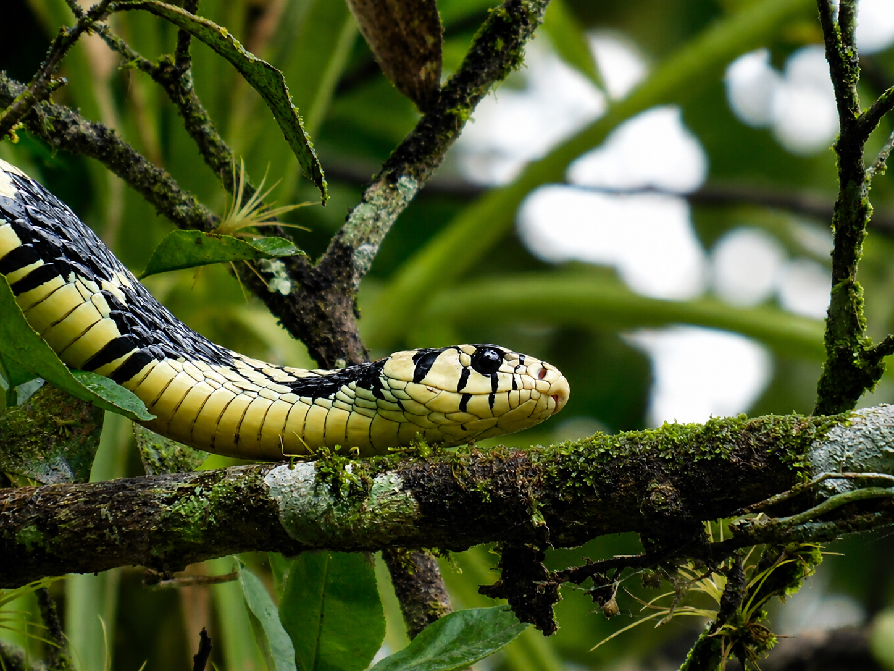
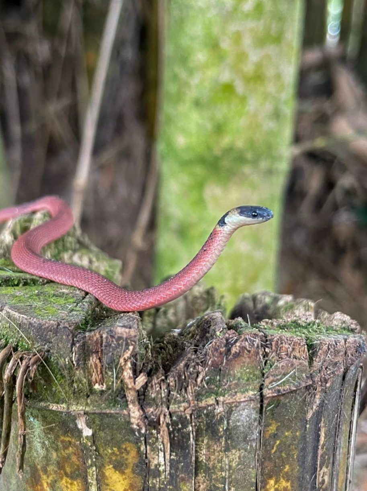

Depredadores acuáticos
Caimanes y cocodrilos ocupan un lugar clave en la cadena alimenticia de los canales y lagunas del refugio.
Caimanes, cocodrilos, basiliscos y tortugas encuentran en los canales, lagunas y riberas de Caño Negro un hábitat ideal, estrechamente ligado a la salud del humedal.
Caño Negro, Los Chiles, Alajuela
Cada uno de estos reptiles muestra la capacidad del refugio para sostener especies adaptadas a los ambientes acuáticos y semiacuáticos del humedal.
Caimanes y cocodrilos ocupan un lugar clave en la cadena alimenticia de los canales y lagunas del refugio.
Es común verlos asoleándose sobre troncos y orillas, una conducta esencial para regular su temperatura corporal.
Desde correr sobre el agua hasta permanecer inmóviles por horas, cada especie desarrolló estrategias propias para sobrevivir en el humedal.
Mantener ríos y lagunas saludables es indispensable para la supervivencia de estas especies y del equilibrio del refugio.

Es el reptil de mayor tamaño del refugio, reconocible por su hocico alargado y estrecho en forma de "V".
Habita los sectores más profundos de los ríos y lagunas, donde actúa como depredador tope del ecosistema acuático.
A diferencia del caimán, cuando cierra la boca se le sigue viendo un diente inferior sobresaliendo, una forma sencilla de diferenciarlo.

Es el cocodrilino más abundante del humedal, más pequeño que el cocodrilo y con una cresta ósea entre los ojos que recuerda unos anteojos.
Se alimenta principalmente de peces, crustáceos y aves acuáticas que encuentra en los canales tranquilos del refugio.
Su nombre viene precisamente de esa cresta ósea entre los ojos, que le da la apariencia de llevar puestos unos anteojos.
Es una de las lagartijas más llamativas del refugio, con una cresta dorsal que recorre la cabeza, el lomo y la cola de los machos.
Se le encuentra cerca de ríos y canales, donde se refugia entre la vegetación de las orillas.
Gracias a sus dedos traseros con flecos y a su velocidad, puede correr sobre la superficie del agua, lo que le valió el apodo de "lagartija de Jesucristo".

Es una de las tortugas de agua dulce más comunes del refugio, fácil de observar asoleándose sobre troncos y rocas junto al agua.
Se alimenta tanto de plantas acuáticas como de pequeños animales, complementando su dieta según la disponibilidad de alimento.
Tomar sol no es solo cuestión de temperatura: también le ayuda a sintetizar vitamina D y a mantener su caparazón sano.

Es una serpiente delgada y de un intenso color verde que se camufla a la perfección entre las ramas y el follaje, gracias a su cuerpo alargado muy similar a un bejuco.
Es una especie diurna y arborícola que caza principalmente lagartijas y pequeñas aves, localizando a sus presas gracias a su excelente visión binocular.
Cuenta con una leve toxina en la saliva que usa para inmovilizar a sus presas pequeñas, pero no representa un peligro significativo para las personas.

Es uno de los reptiles más comunes y reconocibles del refugio, con una hilera de espinas dorsales que recorre su lomo desde el cuello hasta la cola.
Es principalmente herbívora, alimentándose de hojas, flores y frutos, y suele asolearse en ramas altas cerca del agua para regular su temperatura.
Durante la temporada reproductiva, los machos dominantes desarrollan una coloración anaranjada o dorada intensa, muy distinta al verde que exhiben el resto del año.

Es una serpiente esbelta y de movimientos ágiles, con ojos grandes y una coloración que puede variar entre tonos verdes, oliva y pardos según el individuo y la luz.
Es una especie diurna que se desplaza con facilidad entre la vegetación baja y los arbustos cercanos al agua, cazando ranas, lagartijas y pequeños roedores.
Cuando se siente amenazada, puede inflar la parte delantera del cuerpo y abrir la boca para mostrar un interior oscuro, un despliegue defensivo para ahuyentar a posibles depredadores.

Es una de las serpientes más grandes y llamativas del refugio, con un patrón de escamas negras y amarillas que recuerda a las rayas de un tigre.
A pesar de su tamaño imponente, no es venenosa; caza principalmente aves, huevos y pequeños mamíferos, y es una excelente trepadora de árboles.
Cuando se siente amenazada, puede aplanar su cuerpo y vibrar la cola contra las hojas secas, imitando el sonido de una serpiente de cascabel para intimidar a sus depredadores.

Es una serpiente pequeña y de cuerpo delgado, con un dorso de color rojizo o rosado y una franja negra en la cabeza bordeada por una línea clara.
Es una especie terrestre y de hábitos nocturnos que se refugia bajo hojarasca, troncos caídos y piedras, alimentándose principalmente de babosas y lombrices.
A pesar de su color llamativo, es completamente inofensiva para las personas; su apariencia funciona más bien como advertencia visual frente a posibles depredadores.
Descubre a los reptiles de Caño Negro, especies clave para entender el equilibrio de un ecosistema que depende por completo de sus ríos y lagunas.
Se ubica en Los Chiles, Alajuela, Costa Rica, cerca de la frontera con Nicaragua.
Puedes acceder por la Ruta 138 desde Upala o Los Chiles. Usa el botón de ubicación para ver la ruta.
Más de 300 especies de aves, además de reptiles, mamíferos y una gran diversidad de flora.
Durante la estación seca para senderismo, o época lluviosa para ver aves migratorias.
Ropa cómoda, repelente, agua, cámara y protección solar.
Cambiando idioma...